Mughal — Taj Mahal
Tổng mặt bằng
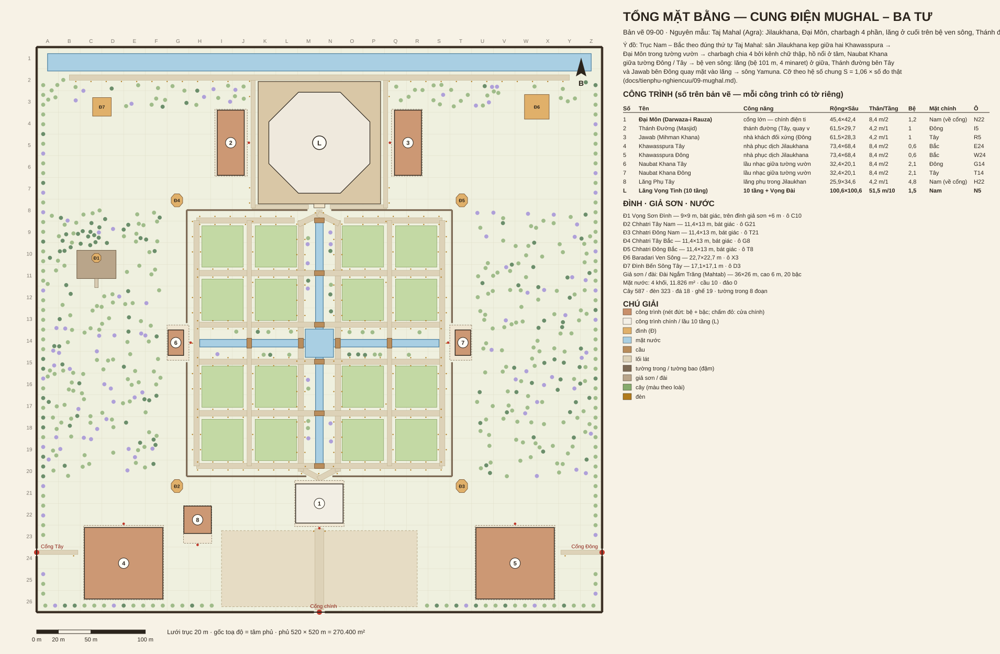
Lăng Vọng Tinh (lầu 10 tầng)
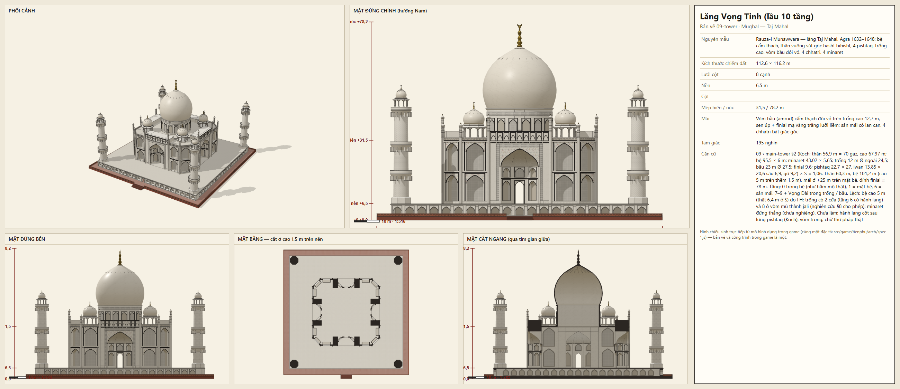
Đại Môn (Darwaza-i Rauza)
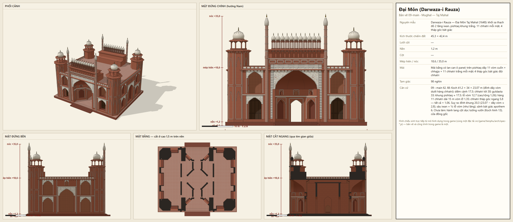
Thánh Đường (Masjid)
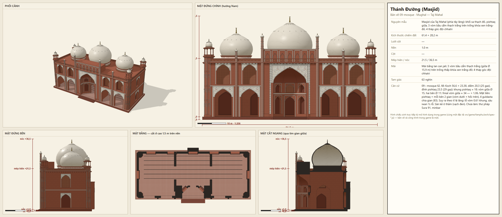
Jawab (Mihman Khana)
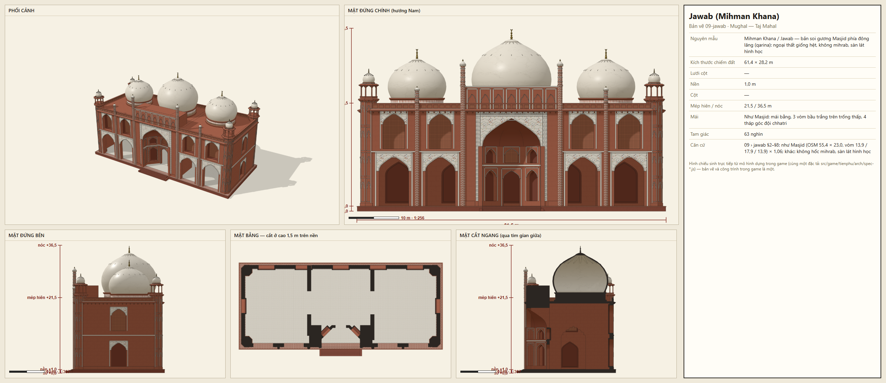
Khawasspura Tây
Khawasspura Đông
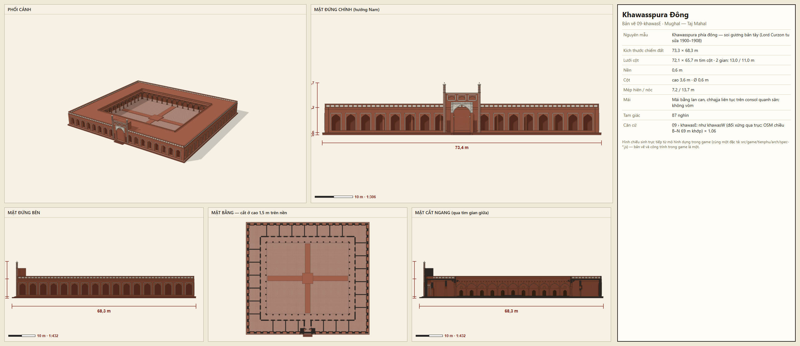
Naubat Khana Tây
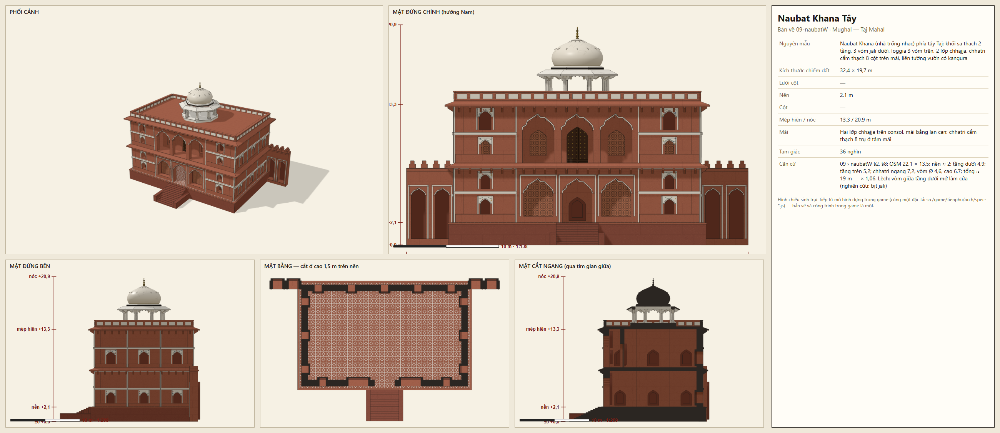
Naubat Khana Đông
Lăng Phụ Tây (Saheli Burj)
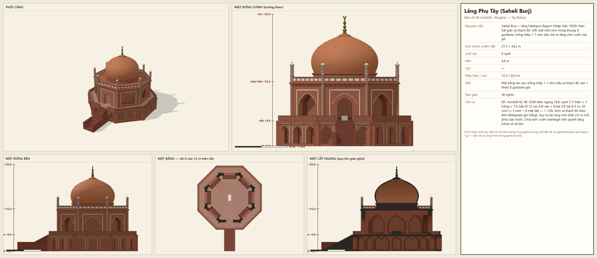
Vọng Sơn Đình
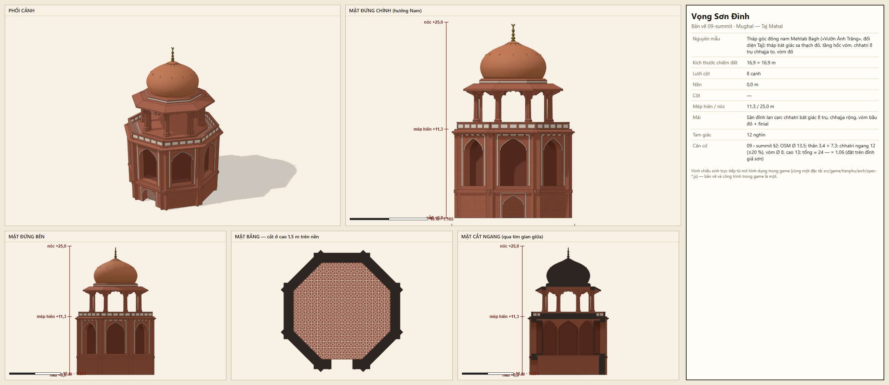
Chhatri Tây Nam
Chhatri Đông Nam
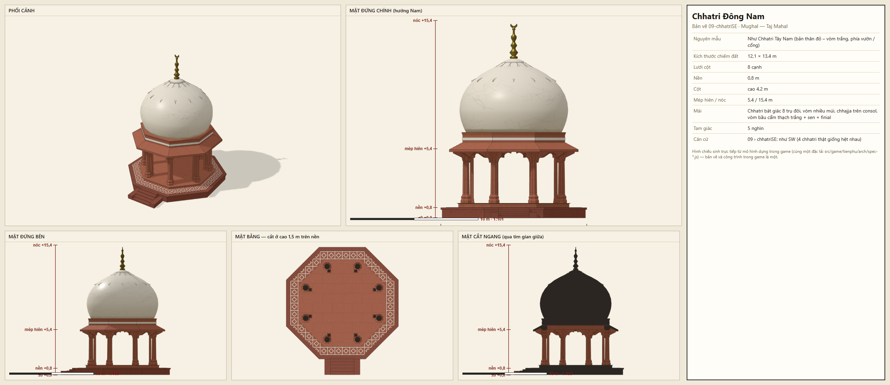
Chhatri Tây Bắc
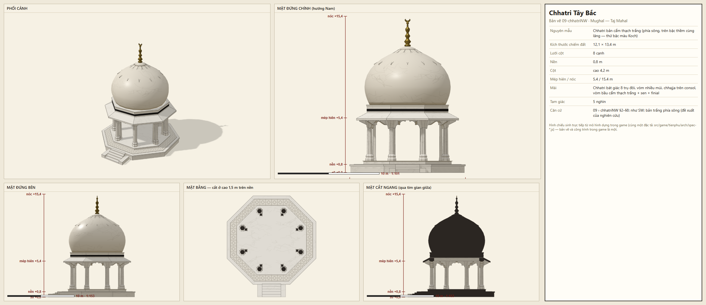
Chhatri Đông Bắc
Baradari Ven Sông
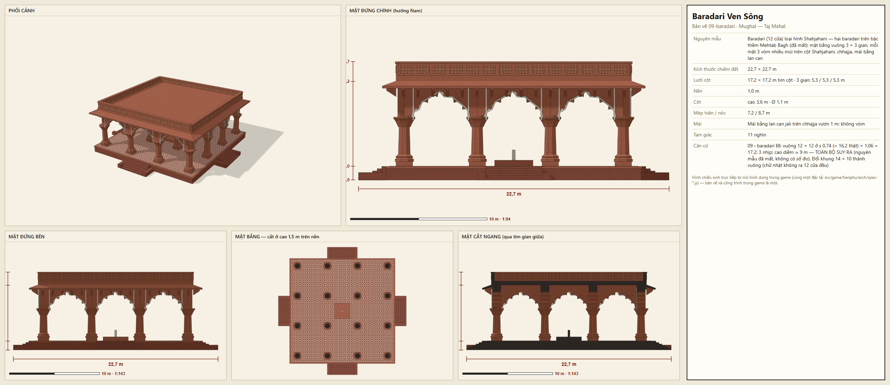
Đình Bến Sông Tây
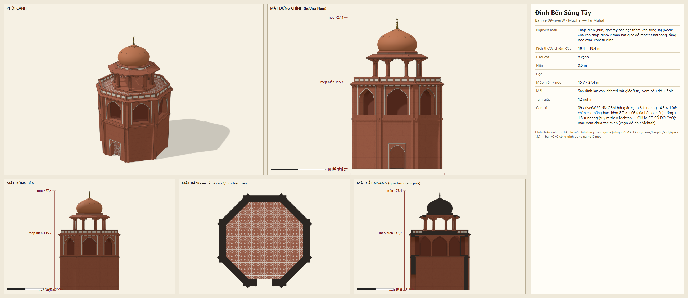